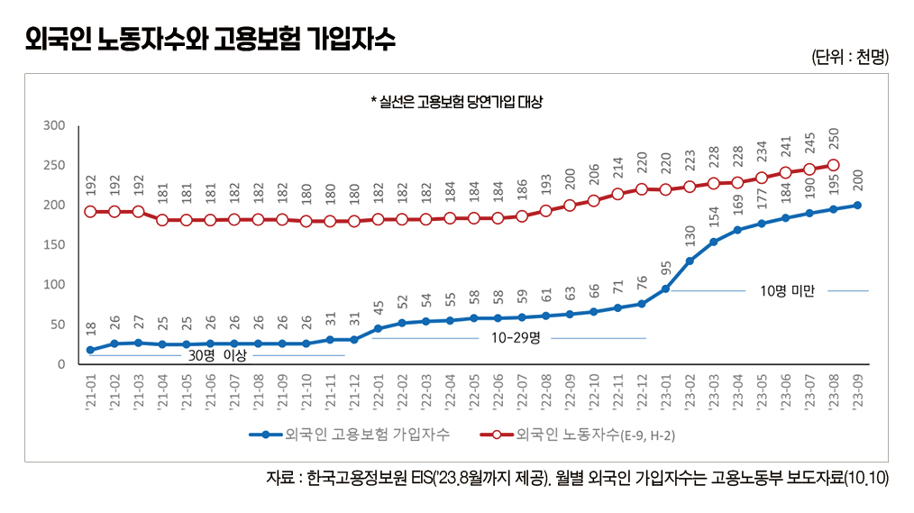

박영삼의 통계로 보는 노동
고용허가제 취업자 25만명, 지난해 대비 5만명 순증
대부분 제조업 취업 … 기업 구인 돕는 노력 절반이라도 노동자 구직에 쏟아야
고용노동부가 지난 10일 발표한 ’고용행정 통계 본 2023년 9월 노동시장 동향’에 따르면 고용보험 가입자수가 전년동월 대비 35만9천명 증가했으나 외국인 증가분 13만7천명을 제외할 경우 내국인의 증가는 22만1천명에 그쳤다. 특히 제조업의 경우 고용보험 가입자가 11만9천명 증가했지만 내국인만 놓고 보면 오히려 100명 감소한 것으로 나타났다.
외국인의 고용보험 가입 증가는 기존의 외국인 노동자들이 고용보험 당연가입 대상으로 편입되면서 가입자가 증가하는 것과 함께 최근 들어 정부가 외국인력 도입 규모를 대폭 확대한 데서 나타나는 신규 유입 영향이 함께 작용하고 있다.
지난 정부에서 고용보험법 개정을 통해 비전문취업(E-9)과 방문취업(H-2) 체류자격 외국인에 대한 고용보험의 고용안정·직업능력개발사업 가입이 의무화됐는데 올해 1월부터 10명 미만 사업장까지 적용이 확대됐다.
또 현 정부 출범 이후 외국인력 도입 규모를 대폭 확대한 영향도 크다. 노동부는 지난해 9월 고용허가제 쿼터를 5만9천명에서 6만9천명으로 1만명 확대한 데 이어 올해 쿼터를 11만명으로 사상 최대 규모로 확대했다. 지난달에는 이를 다시 12만명으로 늘리면서 사업장별 인원제한도 2배 이상으로 늘려주고 300인 이상 중견기업도 고용허가제를 통해 외국인을 고용할 수 있도록 허용한다고 밝혔다.
이에 따라 지난해 9월 20만명이었던 고용허가제 외국인 노동자는 올해 9월 25만명으로 1년 만에 5만명이 늘었고 외국인 고용보험 가입자수는 같은 기간 6만3천명에서 20만명으로 13만 7천명이 늘어난 상태다. 직업능력개발사업에 국한된 것이긴 하지만 고용보험 가입률이 80%에 육박한다. 고용허가제 노동자 5명 중 1명꼴로 고용보험에 가입된 셈이다.

추가로 늘어난 외국인 고용보험 가입자 가운데 E-9 및 H-2 체류자격 취업자의 순증 인원 5만명을 뺀 나머지 8만6천명이 기존 외국인으로. 고용보험 당연가입자로 전환된 잠정치로 볼 수 있다. 외국인력 도입 규모 확대가 본격화되기 전이라는 사실을 감안한다면 앞으로 있을 신규 외국인력의 증가 규모는 지금보다 훨씬 더 클 것으로 예상된다.
한국고용정보원의 분기별 ‘외국인근로자 근무현황’ 통계에 따르면 E-9 체류자격자의 경우 올해 2분기 총취업자가 22만5천명으로 2년 전인 2021년 2분기에 비해 6만4천명이 늘어났으며 코로나 발생 이전 최고치였던 2019년 4분기의 22만3천명 수준을 이미 넘어선 상태다. 이들 가운데 제조업 취업자만 18만3천명으로 2년 전 대비 5만명이 늘어났으며 최고치였던 2019년 4분기의 18만1천명 수준 이상을 벌써 회복한 상태다.
앞으로는 더 늘어날 외국인력은 고용허가제에 국한되지도 않는다. 통계청과 법무부에서 조사하는 ’이민자 체류실태 및 고용조사’에 따르면 우리나라의 외국인 취업자는 2022년 말 기준으로 총 84만3천명이다. 이 가운데 재외동포(F-4) 체류자격을 가진 취업자가 숫자상으로는 가장 많다. 2019년 15만8천명이었던 H-2가 지난해는 7만2천명으로 줄었지만 재외동포 취업자는 2019년 19만5천명에서 지난해 24만6천명으로 코로나 상황에서도 늘어났다. 중국 국적 동포들 가운데 H-2에서 F-4로 전환된 사람들이 상당수 있을 것으로 추정된다. 이들은 내국인과 거의 유사한 정도로 비교적 자유로운 취업이 가능하지만 단순노무직 취업은 제한된다. 그런데 정부는 올해 5월부터 이들에 대해 추가로 음식점과 숙박업의 6개 단순직 취업을 허용한다고 밝혔다.
청년 취업자가 지난해 11월 이후 10개월째 계속 감소하고 있고 제조업의 취업자는 올해 1월 이후 8개월째 감소 중이다. 그런데도 고용노동부는 ‘노동시장 활력 제고를 위한 킬러규제 혁파’ 방안으로 외국인력 도입 확대를 가장 중요한 핵심 과제로 내걸었다. 기업들을 위한 노력의 절반만큼이라도 청년과 취약계층을 위해 쏟아야 하지 않을까.
고려대 노동문제연구소 노동데이터센터장 (youngsampk@gmail.com)